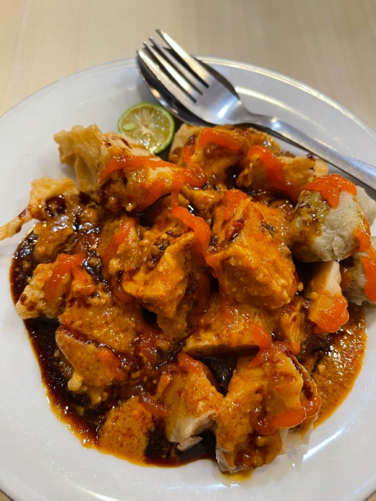

Khas Bandung

Batagor
Batagor adalah makanan khas Bandung berbahan dasar ikan dan tahu yang digoreng hingga renyah, lalu disajikan dengan saus kacang yang gurih dan pedas. Cita rasa autentiknya membuat Batagor menjadi kuliner paling terkenal di kota ini.

Gedung Sate
Gedung Sate adalah ikon Kota Bandung yang dibangun tahun 1920 dengan gaya arsitektur kolonial klasik yang berpadu unsur Nusantara. Bangunan ini memiliki ciri khas ornamen tusuk sate di puncaknya yang membuatnya mudah dikenali.